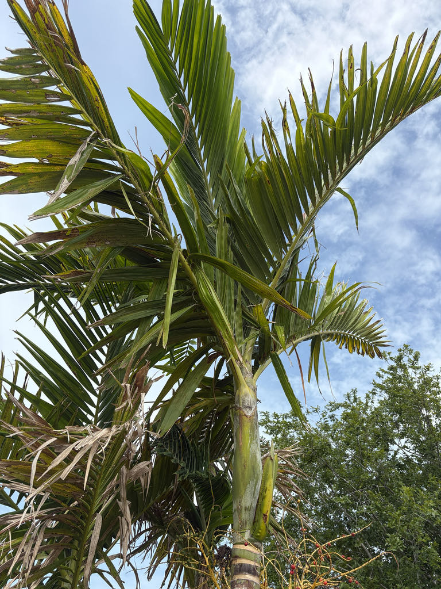

- The name 'solitaire' is not just decorative — it literally sets this species apart from its relatives. Most other Ptychosperma palms spread into clumping colonies of multiple trunks; this one grows exactly one, always alone.
- The genus name encodes an odd detail visible in every seed: Ptychosperma comes from the Greek for 'folded seed.' Crack one open and you will find it deeply grooved — five longitudinal channels pressed into the surface like folds in fabric.
- Ptychosperma elegans was among the first Australian palms to reach cultivation outside its homeland, arriving in European conservatories by the 1820s — less than two decades after it was formally described by botanist Robert Brown in 1810.
- Because birds feed enthusiastically on the bright red fruit and disperse the seeds into natural areas, this palm has established itself beyond gardens and is considered invasive in southern Florida's moist habitats.
The Solitaire Palm is endemic to Queensland, Australia, occurring along the coast and near-coast from the tip of Cape York Peninsula south to roughly the Mission Beach area. In its home range it is a rainforest understory tree, typically found in lowland tropical and subtropical forests — often close to rivers and streams where moisture is reliable and drainage is good.
It was formally described by botanist Robert Brown in 1810 under the name Seaforthia elegans, then reclassified into the genus Ptychosperma by Carl Ludwig Blume in 1843. It was among the very first Australian palms to enter cultivation beyond its native range, reaching European conservatories by the 1820s and spreading through tropical botanical gardens worldwide across the 19th century.
By the post-World War II era it was firmly established in Florida landscapes, valued for its fast growth and slender footprint. Today it is one of the most commonly planted palms in South Florida, though that same success — abundant red fruit eaten and dispersed by birds — has earned it a place on Florida's invasive plant watchlist.
- The species epithet elegans is the Latin term for 'graceful' or 'elegant,' and the name fits: the trunk is almost impossibly slender for its height, barely four inches in diameter at maturity, and topped by a clean olive-green crownshaft and arching canopy of deep green fronds. UF/IFAS has called it a good specimen for small residential yards precisely because it takes up so little lateral space.
- That narrow trunk is ringed with dark circular leaf-base scars that lighten with age, giving the stem a bamboo-like banded quality. The crownshaft — the smooth, waxy, slightly swollen cylinder at the top of the trunk from which all the fronds emerge — is a reliable way to identify a palm in the Ptychosperma group.
- When a frond dies, the whole thing detaches cleanly, keeping the tree tidy without any pruning.
- The leaflets are unusual among feather palms: they are bluntly squared and jagged at the tip rather than coming to a point, giving the frond a soft, almost notched silhouette. This truncated leaflet tip is one of the clearest field marks for the species.
The inflorescences — heavily branched, green-yellow sprays two to three feet long that emerge just below the crownshaft — produce small white male and female flowers and attract pollinating insects when in bloom. The palm is monoecious, meaning both sexes of flower appear on the same tree, so every individual can set fruit without a separate pollen source nearby.
The real wildlife moment comes with the fruit. Clusters of bright red, egg-shaped drupes about an inch in diameter ripen in quantity and are readily taken by birds, which distribute the seeds widely.
In southern Florida that seed dispersal has allowed the palm to establish in moist natural areas beyond gardens — a conservation concern the park takes seriously, which is why visitors will find it here as an established specimen rather than a plant we would introduce today.
Heavily branched, green-yellow inflorescences two to three feet long emerge just below the crownshaft. Each inflorescence bears both male and female flowers — small and white — on the same tree, so a single palm can set fruit without cross-pollination.
Bright red, egg-shaped drupes roughly one inch in diameter and up to about half an inch wide. Each fruit holds a single seed with five deep longitudinal grooves — the 'folded seed' that gives the genus its name. Fruit is not edible.
Pinnately compound, reaching six to eight feet in length on a roughly one-foot petiole. Leaflets are narrowly oblong, dark green above and gray-green beneath, and distinctively blunt and jagged at the tip rather than tapered to a point. They grow in a V-shaped arrangement along the rachis.
A prominent two-foot-tall olive-green crownshaft with a slightly bulging, smooth waxy base sits atop the trunk and is the point from which all fronds emerge. The trunk is solitary, very slender — up to about four inches in diameter — light gray to near white, and marked by dark encircling leaf-base scars that fade with age.
Start at the top with the crownshaft — a smooth, slightly swollen olive-green cylinder about two feet tall sitting right beneath the fronds; it is the clearest structural landmark on the whole tree.
Next, look closely at the leaflet tips: they are bluntly squared off and jagged, almost as if cut with pinking shears, rather than coming to a point — unusual for a feather palm and a reliable field mark. Finally, scan down the ultra-slender trunk for the neat, dark horizontal rings left behind by cleanly shed fronds; older scars near the base have faded to nearly match the pale gray trunk.
When in fruit, the clusters of bright red egg-shaped drupes hanging just below the crownshaft are hard to miss.
The fruit is not edible — the flesh around the seed is minimal and not a food source — but it is not toxic to people or dogs. UF/IFAS notes that all members of the Ptychosperma genus are considered moderately to highly allergenic, so people with pollen sensitivities may notice a reaction during bloom. Otherwise this palm poses no meaningful safety concern.
Palmpedia and other sources note that this palm is sometimes sold or labeled as 'Alexander palm' in the nursery trade — a name that properly belongs to Archontophoenix alexandrae, a different Australian species. The confusion is widespread enough that UF/IFAS and Wikipedia both flag it specifically.
Because of its FISC Category II status, the park does not recommend this species for new plantings in landscapes adjacent to natural areas in southern Florida. The specimen here predates that understanding and is maintained as an educational example of both the plant's ornamental qualities and the real conservation questions it raises.


- © Randall Carter (CC-BY-NC), via iNaturalist